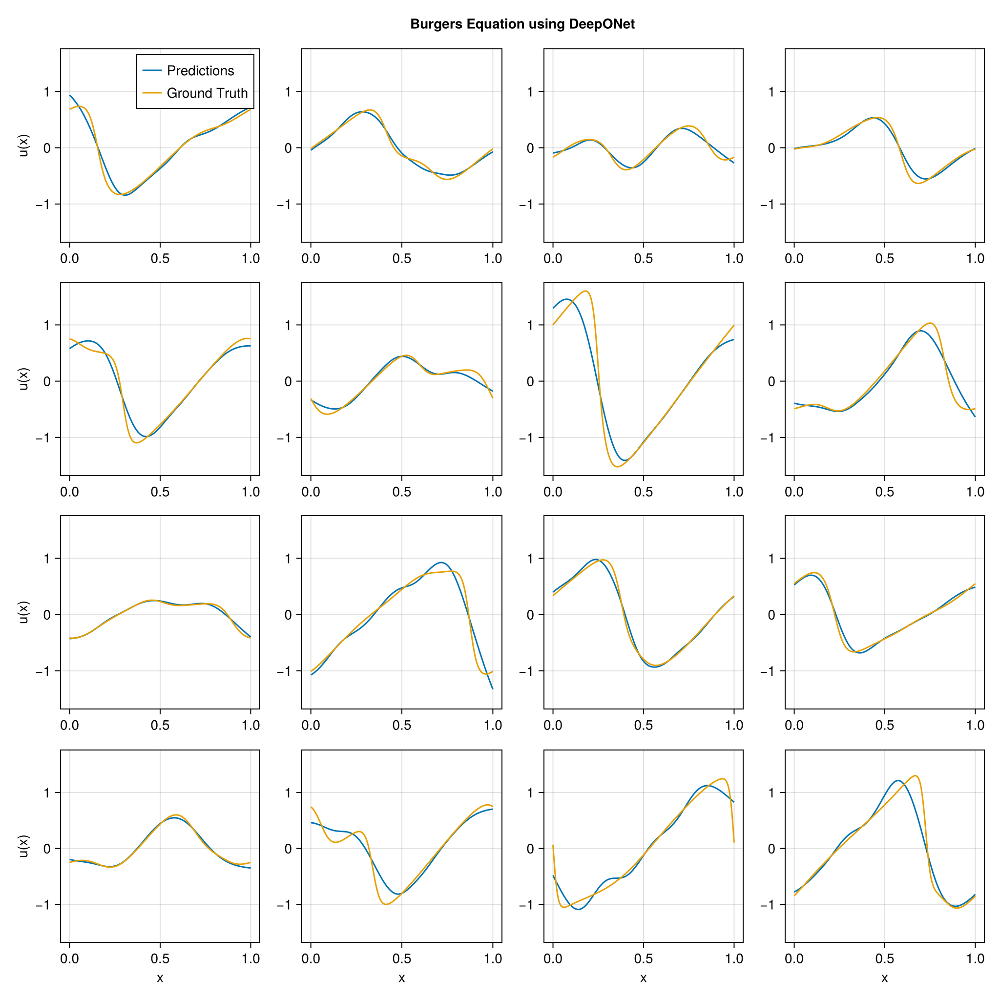

using DataDeps, MAT, MLUtils
using PythonCall, CondaPkg # For `gdown`
using Printf
const gdown = pyimport("gdown")
register(
DataDep(
"Burgers",
"""
Burgers' equation dataset from
[fourier_neural_operator](https://github.com/zongyi-li/fourier_neural_operator)
mapping between initial conditions to the solutions at the last point of time \
evolution in some function space.
u(x,0) -> u(x, time_end):
* `a`: initial conditions u(x,0)
* `u`: solutions u(x,t_end)
""",
"https://drive.google.com/uc?id=16a8od4vidbiNR3WtaBPCSZ0T3moxjhYe",
"9cbbe5070556c777b1ba3bacd49da5c36ea8ed138ba51b6ee76a24b971066ecd";
fetch_method=(url, local_dir) -> begin
pyconvert(String, gdown.download(url, joinpath(local_dir, "Burgers_R10.zip")))
end,
post_fetch_method=unpack
)
)
filepath = joinpath(datadep"Burgers", "burgers_data_R10.mat")
const N = 2048
const Δsamples = 2^3
const grid_size = div(2^13, Δsamples)
const T = Float32
file = matopen(filepath)
x_data = reshape(T.(collect(read(file, "a")[1:N, 1:Δsamples:end])), N, :, 1)
y_data = reshape(T.(collect(read(file, "u")[1:N, 1:Δsamples:end])), N, :, 1)
close(file)
x_data = permutedims(x_data, (2, 1, 3))
grid = reshape(T.(collect(range(0, 1; length=grid_size)')), :, grid_size, 1)
1×1024×1 Array{Float32, 3}:
[:, :, 1] =
0.0 0.000977517 0.00195503 … 0.997067 0.998045 0.999022 1.0
using Lux, NeuralOperators, Optimisers, Zygote, Random
using LuxCUDA
const cdev = cpu_device()
const gdev = gpu_device()
deeponet = DeepONet(;
branch=(size(x_data, 1), ntuple(Returns(32), 5)...),
trunk=(size(grid, 1), ntuple(Returns(32), 5)...),
branch_activation=tanh,
trunk_activation=tanh
)
ps, st = Lux.setup(Random.default_rng(), deeponet) |> gdev;
((branch = (layer_1 = (weight = Float32[-0.016557515 0.030150767 … -0.0078029633 -0.07077856; -0.055044364 -0.018812034 … 0.056839798 0.023640143; … ; 0.01911907 0.0843145 … 0.07920619 -0.07587692; 0.08917803 -0.04092124 … 0.08793917 0.058370724], bias = Float32[-0.024512243, 0.0038619228, 0.018199507, 0.003803838, 0.016559895, 0.021089796, 0.030177698, -0.019548047, -0.015359104, -0.01175566 … -0.02119657, 0.030388769, -0.0054464154, 0.0011754483, 0.003713198, -0.01222574, 0.009821188, 0.0018252395, -0.031214982, 0.022913221]), layer_2 = (weight = Float32[-0.0998736 0.4476912 … 0.13709283 0.109187186; -0.33679008 -0.42295706 … -0.43094394 0.044756718; … ; -0.07496675 -0.49587536 … 0.028346512 -0.18698697; 0.22196448 -0.37254512 … 0.38636428 -0.053673908], bias = Float32[0.009230392, -0.15914646, 0.0117550725, -0.03930027, 0.079803035, 0.1434113, -0.1745579, -0.027909031, 0.0340614, 0.10865999 … 0.10368658, -0.11070344, -0.06295416, -0.004803624, -0.11643754, -0.108035415, -0.05332786, 0.097106025, 0.039597176, 0.060860954]), layer_3 = (weight = Float32[0.1416971 -0.18186112 … 0.38169453 -0.48028082; 0.3675593 0.19851306 … -0.16362578 -0.36688533; … ; -0.30712366 0.31087303 … -0.07691945 0.45767036; 0.43717518 -0.1830599 … 0.113789625 0.38431796], bias = Float32[-0.1159774, 0.0094878245, -0.09040864, 0.04108205, 0.061951146, -0.052567467, 0.14797126, 0.17635117, 0.1628115, -0.03781116 … -0.16070536, -0.011219702, 0.10401063, -0.09680556, 0.11341007, 0.14511834, -0.124983594, 0.055529315, 0.0055980287, -0.085508436]), layer_4 = (weight = Float32[0.1024372 -0.29453862 … 0.080708966 -0.42372388; -0.46917683 0.47669157 … 0.40510067 0.4778994; … ; 0.50824696 -0.48143727 … -0.14766501 -0.41526932; 0.37352547 -0.15182732 … -0.28103495 -0.27048054], bias = Float32[0.10125197, -0.17653644, 0.025627328, 0.04195409, 0.0008149515, 0.049791064, -0.00675241, 0.16026126, 0.10258589, 0.09585093 … -0.16762613, 0.103383355, -0.062318098, -0.121687986, 0.012069425, 0.17454533, 0.13266034, 0.0631874, -0.12654252, -0.16390121]), layer_5 = (weight = Float32[-0.24090992 0.20443246 … 0.0924015 -0.28598183; 0.10160135 0.17956498 … -0.116098545 0.026124246; … ; 0.17049256 0.24726947 … 0.21744253 -0.1766142; 0.076981604 0.08198484 … -0.037965216 0.11691287], bias = Float32[-0.12507924, 0.025343891, -0.13935052, -0.17489062, 0.07107642, -0.12862824, -0.111375384, 0.007821296, 0.11589408, 0.047714975 … 0.13989003, -0.013180921, 0.06999061, -0.02593717, 0.096400104, 0.13114764, -0.17625499, -0.0134117175, -0.07180584, -0.0030795226])), trunk = (layer_1 = (weight = Float32[-1.8113619; 2.3452964; … ; 2.6783733; 1.8268669;;], bias = Float32[-0.81642616, -0.9908223, -0.3706801, 0.7137158, -0.9121109, -0.8617426, 0.98159456, -0.80091333, 0.024037957, 0.7053312 … -0.6066673, -0.9897325, 0.8142582, 0.4774301, -0.9846275, -0.90361106, -0.7011242, -0.88213885, -0.98785245, -0.13850749]), layer_2 = (weight = Float32[0.16754091 -0.38429534 … -0.44051653 0.29408628; 0.07387533 -0.16201368 … 0.3040385 -0.42610994; … ; -0.2984739 0.1590807 … 0.45726067 -0.22096577; 0.45591938 0.19284739 … -0.14704779 0.45630905], bias = Float32[0.048349854, -0.10616254, 0.026392525, 0.04392671, -0.17118461, 0.0769691, -0.06166657, 0.07198629, -0.04474556, 0.13984282 … -0.137373, -0.09058144, 0.055298857, 0.15645075, -0.036107164, 0.14464259, 0.1405061, -0.06998651, -0.11400746, -0.010781754]), layer_3 = (weight = Float32[0.19257855 0.17912614 … 0.03356477 0.11218057; 0.47496948 0.1951638 … -0.30000383 -0.31613278; … ; -0.044469032 0.0119328415 … -0.29297447 0.022854017; 0.33073848 -0.3713843 … -0.43739417 -0.26671225], bias = Float32[0.032514185, 0.035812598, 0.043435026, -0.10032817, 0.14794275, 0.17447485, 0.127868, 0.037143596, 0.021386892, -0.078396596 … 0.009538338, 0.023506077, 0.056381546, 0.16005816, -0.1520782, 0.17103444, 0.09498751, 0.14442852, 0.1652634, 0.083823994]), layer_4 = (weight = Float32[-0.030276159 0.22575137 … -0.022040123 -0.27027765; -0.45367336 -0.4638641 … -0.42637867 -0.33681947; … ; 0.14650388 0.22348015 … 0.47486654 0.2917475; -0.4899414 -0.19366857 … 0.12377104 -0.17151998], bias = Float32[0.13345852, 0.029777402, -0.07957852, -0.1384355, -0.16080068, -0.16369826, -0.00084373774, -0.15760075, -0.16239761, 0.078792565 … -0.07302974, -0.16530928, -0.15084973, 0.0701151, -0.017472018, 0.1657954, 0.11910623, -0.050011177, 0.02792079, -0.0038636439]), layer_5 = (weight = Float32[0.094039515 0.015633274 … -0.004076201 -0.16265483; 0.055137813 -0.10097442 … -0.1584177 -0.21169911; … ; 0.15943033 0.20745271 … 0.082610704 0.27382478; 0.23330535 -0.15271786 … -0.13893427 0.28238705], bias = Float32[-0.052842095, -0.02391387, 0.110084556, 0.046070468, 0.04391967, -0.092409976, -0.018095033, -0.030979387, -0.117582016, -0.012647595 … -0.008929864, 0.11910411, -0.1434222, -0.045849048, 0.16021647, 0.17209142, -0.0050317016, 0.038478557, -0.17312832, 0.089952715])), additional = NamedTuple()), (branch = (layer_1 = NamedTuple(), layer_2 = NamedTuple(), layer_3 = NamedTuple(), layer_4 = NamedTuple(), layer_5 = NamedTuple()), trunk = (layer_1 = NamedTuple(), layer_2 = NamedTuple(), layer_3 = NamedTuple(), layer_4 = NamedTuple(), layer_5 = NamedTuple()), additional = NamedTuple()))
x_data_dev = x_data |> gdev
y_data_dev = y_data |> gdev
grid_dev = grid |> gdev
function loss_function(model, ps, st, ((v, y), u))
û, stₙ = model((v, y), ps, st)
return MAELoss()(û, u), stₙ, (;)
end
function train_model!(model, ps, st, data; epochs=5000)
train_state = Training.TrainState(model, ps, st, Adam(0.0001f0))
for epoch in 1:epochs
_, loss, _, train_state = Training.single_train_step!(
AutoZygote(), loss_function, data, train_state)
if epoch % 25 == 1 || epoch == epochs
@printf("Epoch %d: loss = %.6e\n", epoch, loss)
end
end
return train_state.parameters, train_state.states
end
ps_trained, st_trained = train_model!(
deeponet, ps, st, ((x_data_dev, grid_dev), y_data_dev))
((branch = (layer_1 = (weight = Float32[-0.022715805 0.024117263 … -0.01425467 -0.077076584; -0.055063378 -0.018722985 … 0.056571644 0.023501204; … ; 0.0141675575 0.07968571 … 0.07356906 -0.081165165; 0.083978 -0.04623923 … 0.08307212 0.0533212], bias = Float32[-0.1960234, 0.11720099, 0.044860452, -0.088980116, 0.042643633, 0.111150995, 0.082594045, 0.14151062, -0.15796936, 0.070761286 … -0.07390312, 0.1929665, -0.012326912, 0.031109385, 0.030401142, 0.041952934, 0.123233505, -0.05440733, -0.032357447, 0.09787525]), layer_2 = (weight = Float32[-0.12819427 0.461503 … 0.14100392 0.1249583; -0.36565354 -0.4110163 … -0.39230698 0.0352497; … ; -0.07382842 -0.4574617 … 0.04936653 -0.17697419; 0.24317633 -0.36132511 … 0.36604297 -0.07547762], bias = Float32[0.10705218, -0.21202518, -0.02119701, -0.05159389, 0.104383126, 0.1091462, -0.23177704, 0.13416623, 0.049660318, 0.12342614 … -0.07974134, -0.21532226, 0.0050934856, -0.023403976, -0.07604858, -0.102109894, 0.03468541, 0.17061433, -0.13398887, 0.15376122]), layer_3 = (weight = Float32[0.163717 -0.20851366 … 0.40656728 -0.49409673; 0.36106956 0.19451481 … -0.14739342 -0.35391605; … ; -0.27168873 0.24921189 … -0.17651266 0.40721673; 0.41993874 -0.17320924 … 0.13820355 0.37872732], bias = Float32[-0.16104324, -0.07652978, -0.07708669, 0.071562566, 0.0066587287, -0.07478917, 0.23556252, 0.22585484, 0.23524876, -0.014560921 … -0.1525057, 0.090887666, 0.13594249, -0.12873736, 0.25460958, 0.24684563, -0.0127561595, 0.18578969, 0.06326894, -0.07460381]), layer_4 = (weight = Float32[0.062156852 -0.24235165 … 0.03925771 -0.41696182; -0.4832355 0.46728504 … 0.43756476 0.47958997; … ; 0.4857772 -0.49272257 … -0.09314719 -0.36430305; 0.396723 -0.15802541 … -0.29274818 -0.2728568], bias = Float32[0.14745548, -0.17561167, 0.11453336, 0.037306987, 0.026800178, 0.053200886, 0.024287013, 0.2210401, 0.16023372, 0.22830024 … -0.1266807, 0.09160325, -0.033157885, -0.27863386, -0.011126757, 0.3030987, 0.107078336, 0.0407228, -0.020438094, -0.1733036]), layer_5 = (weight = Float32[-0.23317952 0.20983274 … 0.07815943 -0.27033475; 0.06382764 0.2289264 … -0.11647035 -0.00079962995; … ; 0.15350762 0.2638443 … 0.21613364 -0.16458826; 0.07444799 0.095133394 … -0.05635956 0.14319173], bias = Float32[-0.14537086, 0.045879684, -0.1958582, -0.16026896, 0.08069702, -0.108371496, -0.1269153, 0.004840781, 0.14366937, 0.09292594 … 0.13273618, -0.012739904, 0.09239968, 0.0012072815, 0.108335875, 0.13715203, -0.18514042, -0.04252474, -0.07641286, -0.0010977318])), trunk = (layer_1 = (weight = Float32[-1.8324178; 2.3764713; … ; 2.6772957; 1.8011005;;], bias = Float32[-0.79532945, -1.0177699, -0.38026574, 0.7225055, -0.92426866, -0.9643284, 0.9879618, -0.77744836, -0.04011545, 0.6731783 … -0.59656984, -1.0140877, 0.83034164, 0.4470978, -1.0276775, -0.90519524, -0.66852343, -0.8800741, -1.0170865, -0.1816237]), layer_2 = (weight = Float32[0.16421244 -0.43555462 … -0.48207128 0.2744214; 0.07057942 -0.12320115 … 0.33137482 -0.40790898; … ; -0.2939023 0.15090618 … 0.44671938 -0.22955449; 0.45264435 0.15931852 … -0.17522785 0.4441019], bias = Float32[0.05791023, -0.105153196, 0.034589045, 0.055032566, -0.1460471, 0.07194444, -0.052407898, 0.0615087, -0.07227013, 0.14523628 … -0.13147947, -0.10026421, 0.05582285, 0.1381543, -0.008938687, 0.13353375, 0.17243476, -0.044627097, -0.11518805, -0.0038698465]), layer_3 = (weight = Float32[0.19260497 0.1705234 … 0.035758566 0.18451701; 0.48042724 0.20236808 … -0.3056337 -0.31143683; … ; -0.039720207 0.04587441 … -0.2975104 0.009796909; 0.31832257 -0.3905245 … -0.42189148 -0.22313525], bias = Float32[0.03516368, 0.030090058, 0.06550192, -0.1091036, 0.13803922, 0.17847075, 0.14105713, 0.051135525, 0.031172946, -0.074961215 … 0.025589226, 0.014341517, 0.070235915, 0.12295384, -0.13989809, 0.1772487, 0.13777544, 0.14161359, 0.16082212, 0.099603966]), layer_4 = (weight = Float32[-0.035447296 0.20776561 … -0.04898463 -0.2773167; -0.42255837 -0.469372 … -0.43565342 -0.29447958; … ; 0.14001068 0.21889588 … 0.4742939 0.294282; -0.47286972 -0.20563772 … 0.10798259 -0.22385727], bias = Float32[0.14107266, -0.019004466, -0.079979315, -0.14588387, -0.17766242, -0.15510103, 0.0043473593, -0.16058421, -0.16256312, 0.08089278 … -0.06577545, -0.18211079, -0.13748574, 0.03769504, -0.02124615, 0.18080714, 0.10049347, -0.036369648, 0.036361042, -0.0015192054]), layer_5 = (weight = Float32[0.085729055 0.030216066 … -0.02495012 -0.14653338; 0.047719356 -0.09340317 … -0.14958109 -0.22051056; … ; 0.14838715 0.21711056 … 0.06803478 0.2883908; 0.23496714 -0.15643784 … -0.13765228 0.2758634], bias = Float32[-0.035996918, -0.012892785, 0.11127182, 0.022087261, 0.03236312, -0.10279618, -0.012085386, -0.014677776, -0.111326225, -0.012719496 … 0.004669561, 0.13674027, -0.17188194, -0.05177074, 0.14305757, 0.13987565, -0.0068268697, 0.017876474, -0.16558142, 0.0875369])), additional = NamedTuple()), (branch = (layer_1 = NamedTuple(), layer_2 = NamedTuple(), layer_3 = NamedTuple(), layer_4 = NamedTuple(), layer_5 = NamedTuple()), trunk = (layer_1 = NamedTuple(), layer_2 = NamedTuple(), layer_3 = NamedTuple(), layer_4 = NamedTuple(), layer_5 = NamedTuple())))
using CairoMakie
pred = first(deeponet((x_data_dev, grid_dev), ps_trained, st_trained)) |> cdev
begin
fig = Figure(; size=(1024, 1024))
axs = [Axis(fig[i, j]) for i in 1:4, j in 1:4]
for i in 1:4, j in 1:4
idx = i + (j - 1) * 4
ax = axs[i, j]
l1 = lines!(ax, vec(grid), pred[idx, :, 1])
l2 = lines!(ax, vec(grid), y_data[idx, :, 1])
i == 4 && (ax.xlabel = "x")
j == 1 && (ax.ylabel = "u(x)")
if i == 1 && j == 1
axislegend(ax, [l1, l2], ["Predictions", "Ground Truth"])
end
end
linkaxes!(axs...)
fig[0, :] = Label(fig, "Burgers Equation using DeepONet"; tellwidth=false, font=:bold)
fig
end
